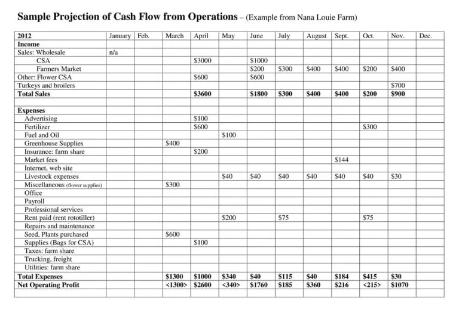

GENERAL FARMING TIPS
Have a General Plan For The Whole Farming Year
This is when a frmer paln's for what will go into entire production year specifically his labour cost, machinery, seedings or any farm inputs

Good Soil Preparation
Its always good to turn soil with all the leftover debris and also apply some animal manure during land preparation
Irrigation
Mulching in vegetable production always helps in soil water conservation
Making use of an irrigation system(mobile or fixed) also helps in crop production through out the year